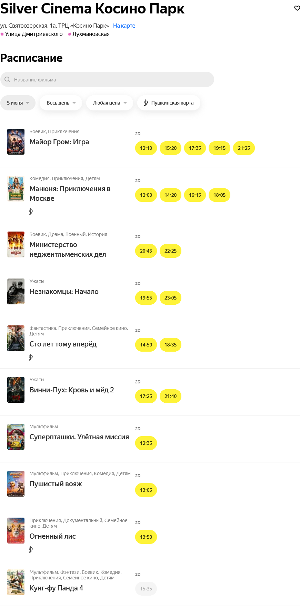

Фильм Майор Гром: Игра. Сюжет: Майор полиции Игорь Гром известен всему Санкт-Петербургу пробивным характером и непримиримой позицией по отношению к преступникам всех мастей. Неимоверная сила, аналитический склад ума и неподкупность — всё это делает майора Грома самым настоящим супергероем. Его жизнь идеальна: днём он ловит преступников вместе с напарником Димой Дубиным, а вечера проводит в компании журналистки Юлии Пчёлкиной. Полную идиллию прерывает появление в городе таинственного злодея, называющего себя Призраком. Он предлагает Грому сыграть в опасную игру, ставка в которой — жизни обычных людей.
Фильм Манюня: Приключения в Москве. Сюжет: Жизнь неугомонной Манюни и сестер Каринэ и Наринэ не стоит на месте, и теперь им предстоит отправиться на летние каникулы в Москву. Девочек ждут невероятные события и приключения, а также неожиданные встречи и знакомства.
Фильм Министерство неджентльменских дел. Cюжет: 1942 год, Великобритания. Они — лучшие из лучших. Отпетые авантюристы и первоклассные спецы, привыкшие действовать в одиночку. Но когда на кону стоит судьба всего мира, им приходится объединиться в сверхсекретное боевое подразделение и отправиться на выполнение дерзкой миссии против нацистов. Теперь их дело — война, и вести они её будут совершенно не по-джентльменски.
Фильм Сто лет тому вперёд. Cюжет: Они живут в разных мирах. Коля Герасимов — в сегодняшней Москве, Алиса Селезнева — на сто лет позже. Коля — обычный парень, ему нет дела до будущего. Алису не отпускает прошлое: она пытается найти маму, которую потеряла, когда была совсем ребенком. Встреча Алисы и Коли станет началом невероятных приключений, в которых им предстоит отвоевать у космических пиратов Вселенную, восстановить ход времени и обрести самое дорогое: любовь и дружбу.
Также, вы можете ознакомится с расписание на остальные новинки кинематографа, начиная от хорроров и заканчивая мультфильмами.
